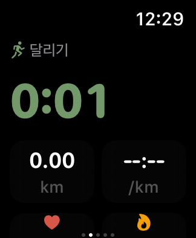
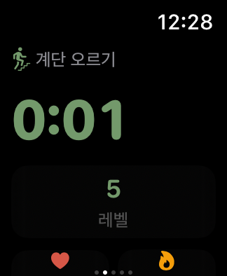
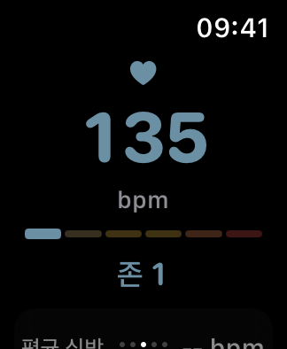
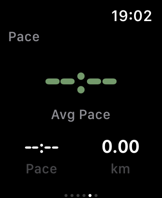
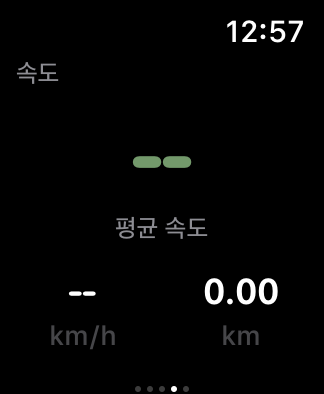
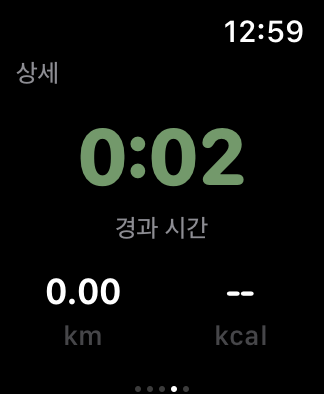
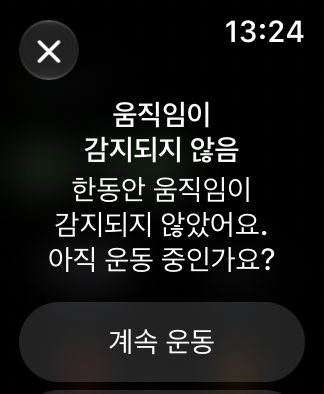
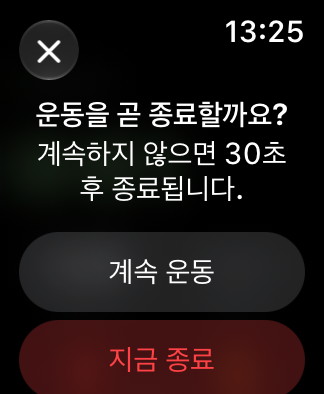
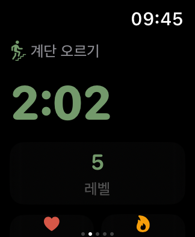
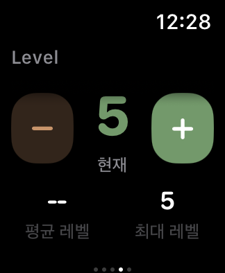

C01 달리기 메인WatchWorkoutFlowSmokeTests/testCaptureRunningDesignMap() · 실제 캡처

C02 기계 운동 메인WatchWorkoutFlowSmokeTests/testCaptureMachineDesignMap() · 실제 캡처

C03 심박 구간WatchWorkoutFlowSmokeTests/testCaptureRunningDesignMap() · 실제 캡처

C04 달리기 상세WatchWorkoutFlowSmokeTests/testCaptureRunningDesignMap() · 실제 캡처

C05 사이클 상세WatchWorkoutFlowSmokeTests/testCaptureCyclingDetailDesignMap() · 실제 캡처

C06 수영 상세WatchWorkoutFlowSmokeTests/testCaptureSwimmingDetailDesignMap() · 실제 캡처
C07 일반 상세WatchWorkoutFlowSmokeTests/testCaptureGenericCardioDetailDesignMap() · 실제 캡처

C08 움직임 없음WatchWorkoutFlowSmokeTests/testCaptureCardioNoMovementDesignMap() · 실제 캡처실제 앱 알림의 실패 첨부 화면. watchOS AX에서 alert로 분류되지 않아 테스트 판정만 실패함.

C09 자동 종료 예고WatchWorkoutFlowSmokeTests/testCaptureCardioAutoEndDesignMap() · 실제 캡처

C10 계단 운동 진행 중 (종료 추정 알림 없음)WatchWorkoutFlowSmokeTests/testStairWorkoutContinuesWithoutPromptDesignMap() · 실제 캡처

C11 기계 운동 상세WatchWorkoutFlowSmokeTests/testCaptureMachineDesignMap() · 실제 캡처
미캡처
C12 유산소 AOD유산소 AOD: 시뮬레이터 저휘도 화면 캡처 불가
C13 거리 1km 통과 알림WatchLiveHeartRateZonesUITests/testKilometerMilestoneAppearsOnCurrentPage() · 실제 캡처Actual frame at 16s from XCTest screen recording of current build; visual milestone shown; test failed accessibility identifier lookup
C14 러닝 거리 우선 기본 화면WatchWorkoutFlowSmokeTests/testRunningDistanceMetricsAndPausedDesignMap() · 실제 캡처
C15 러닝 거리 우선 일시정지WatchWorkoutFlowSmokeTests/testRunningDistanceMetricsAndPausedDesignMap() · 실제 캡처
C16 러닝 음성 안내 제어WatchWorkoutFlowSmokeTests/testRunningVoiceFeedbackTogglePersistsAcrossNavigationAndRelaunch() · 실제 캡처
C17 러닝 안내 거리·볼륨 설정WatchWorkoutFlowSmokeTests/testRunningFeedbackSettingsPersistAcrossSheetAndRelaunch() · 실제 캡처
C18 러닝 목표 페이스·허용 범위 설정WatchWorkoutFlowSmokeTests/testRunningFeedbackSettingsPersistAcrossSheetAndRelaunch() · 실제 캡처
C19 계단 기구 이탈 후 종료 여부 확인 (실제 GPS 이동·보행, 자동 종료 없음)WatchWorkoutFlowSmokeTests/testStairGPSExitReminderKeepsRecordingUntilUserChooses() · 실제 캡처